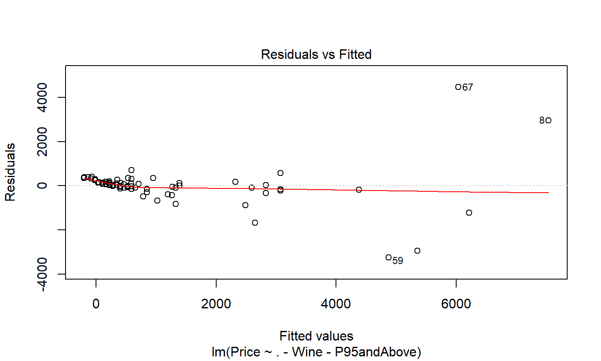
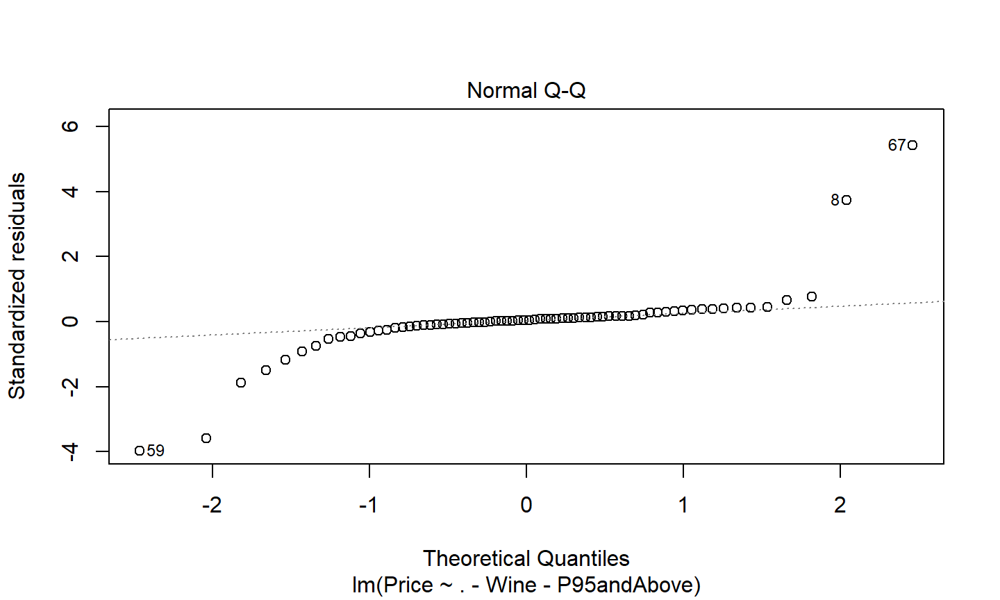
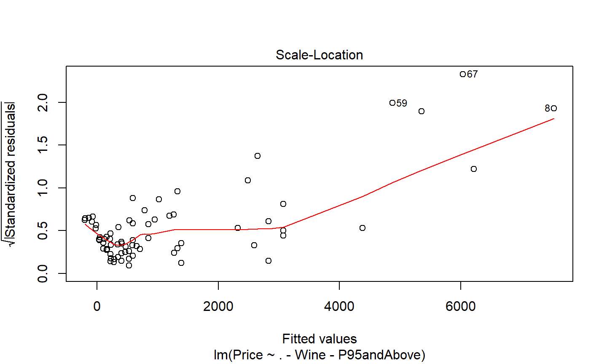
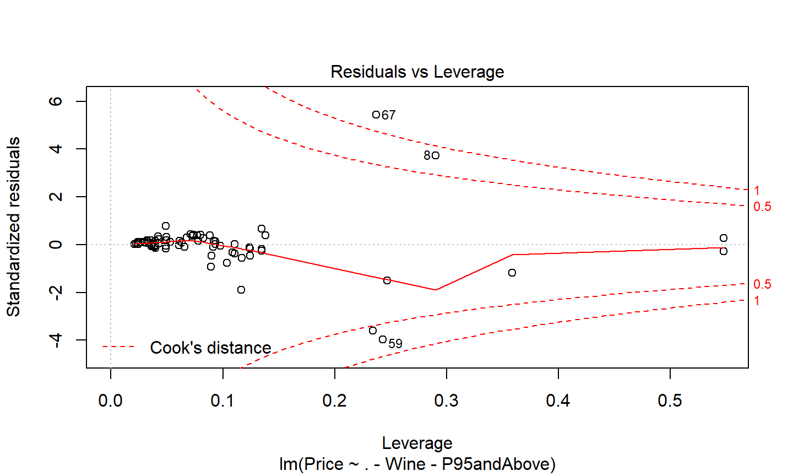

R Bootcamp 2020
Test for the difference in GDP Per capita.
# using the restriocted data from the exercise (gdp.test <- t.test(NY.GDP.PCAP.CD~in.Africa, data=data))
## ## Welch Two Sample t-test ## ## data: NY.GDP.PCAP.CD by in.Africa ## t = -7.0402, df = 3.022, p-value = 0.005749 ## alternative hypothesis: true difference in means is not equal to 0 ## 95 percent confidence interval: ## -58966.64 -22356.59 ## sample estimates: ## mean in group Africa mean in group Other ## 1201.708 41863.325
Formulas, created with a ~, represent relationships. They can
~x
~log(.+1)y ~ x + z
y ~ x + log(z)y ~ x + poly(z,3), a polynomial fit of degree 3 on zy ~ x:zy ~ a*b is equal to y ~ a + b + a:by ~ a + b %in% a or equivalently y~a/bThe gdp.test object is a htest object, which prints nicely but what if we want to include this in our table 1?
Try these:
str(gdp.test) # get the underlying structure of the object. glimpse(gdp.test) # alternative to str that handles some objects better. gdp.test$p.value getElement(gdp.test, 'p.value') gdp.test[['p.value']]
Use prop.test to test for the difference in proportions of males for all countries.
5:00
suppressMessages(library(magrittr))
data %>%
mutate(N.males = round(SP.POP.TOTL*SP.POP.TOTL.MA.ZS/100)) %$%
prop.test(N.males, SP.POP.TOTL)
## ## 11-sample test for equality of proportions without ## continuity correction ## ## data: N.males out of SP.POP.TOTL ## X-squared = 135837, df = 10, p-value < 2.2e-16 ## alternative hypothesis: two.sided ## sample estimates: ## prop 1 prop 2 prop 3 prop 4 prop 5 prop 6 ## 0.4781971 0.4848457 0.5014707 0.5014707 0.4999245 0.5062502 ## prop 7 prop 8 prop 9 prop 10 prop 11 ## 0.4862119 0.4981671 0.4915102 0.4925855 0.4944933
suppressMessages(library(magrittr)) #< To ignore unimportant message.
data %>%
mutate(N.males = round(SP.POP.TOTL*SP.POP.TOTL.MA.ZS/100)) %$%
prop.test(N.males, SP.POP.TOTL)
%$%.mutate(N.male = ...), get counts of males, because prop.test expects counts.%$% the Accessor pipe to make the variables directly accessible to the next commandprop.test to perform the test.Passing in a matrix with ‘successes’ and ‘failures’:
data %>%
# get our 'successes' and 'failures'
transmute( males = round(SP.POP.TOTL*SP.POP.TOTL.MA.ZS/100)
, females = SP.POP.TOTL-males
) %>%
# convert to a matrix
as.matrix() %>%
prop.test()
## ## 11-sample test for equality of proportions without ## continuity correction ## ## data: . ## X-squared = 135837, df = 10, p-value < 2.2e-16 ## alternative hypothesis: two.sided ## sample estimates: ## prop 1 prop 2 prop 3 prop 4 prop 5 prop 6 ## 0.4781971 0.4848457 0.5014707 0.5014707 0.4999245 0.5062502 ## prop 7 prop 8 prop 9 prop 10 prop 11 ## 0.4862119 0.4981671 0.4915102 0.4925855 0.4944933
wine <- read.csv("data/Bordeaux.csv")
Wine - the name of the wine.Price - The price of the wine in pounds sterling(£)ParkerPoints - the rating out of 100 given by Robert Parker.CoatesPoints - the rating out of 20 given by Clive CoatesP95andAbove - a dummy variable, 1 if ParkerPoints>=95FirstGrowth - inditcator of if the wine is a first growthCultWine - indicator of if the wine is a cult winePomerol - indicator for if the wine is from Pomerol, FranceVintageSuperstar - indicator if the wine is a superstarWe will rely on the normal approximation for proportions.
model <- lm( Price ~ . - Wine - P95andAbove, data=wine) model
## ## Call: ## lm(formula = Price ~ . - Wine - P95andAbove, data = wine) ## ## Coefficients: ## (Intercept) ParkerPoints CoatesPoints ## -7390.78 61.94 116.27 ## FirstGrowth CultWine Pomerol ## 2001.41 4583.54 739.16 ## VintageSuperstar ## 1424.58
Not really useful.
We will rely on the normal approximation for proportions.
model <- lm( Price ~ . - Wine - P95andAbove, data=wine) model
Price ~ . - Wine - P95andAbove should be read as
“Model Price by all variables except Wine and P95andAbove.”
(model.summary <- summary(model))
## ## Call: ## lm(formula = Price ~ . - Wine - P95andAbove, data = wine) ## ## Residuals: ## Min 1Q Median 3Q Max ## -3251.2 -102.5 40.5 167.2 4463.7 ## ## Coefficients: ## Estimate Std. Error t value Pr(>|t|) ## (Intercept) -7390.78 3766.82 -1.962 0.0540 . ## ParkerPoints 61.94 44.84 1.381 0.1719 ## CoatesPoints 116.27 119.14 0.976 0.3327 ## FirstGrowth 2001.41 410.38 4.877 7.28e-06 *** ## CultWine 4583.54 470.80 9.736 2.56e-14 *** ## Pomerol 739.16 305.71 2.418 0.0184 * ## VintageSuperstar 1424.58 715.89 1.990 0.0508 . ## --- ## Signif. codes: ## 0 '***' 0.001 '**' 0.01 '*' 0.05 '.' 0.1 ' ' 1 ## ## Residual standard error: 941.3 on 65 degrees of freedom ## Multiple R-squared: 0.7716, Adjusted R-squared: 0.7506 ## F-statistic: 36.61 on 6 and 65 DF, p-value: < 2.2e-16
coef(model) coef(summary(model)) deviance(model) formula(model) residuals(model)
summary(model) plot(model) predict(model) vcov(model) anova(model) aov(model)
5:00
plot(model, 1) #< Residuals vs. Fitted | Goodness of fit

plot(model, 2) #< Normal Q-Q | Appropriate error model

plot(model, 3) #< Scale-Location | Homoscedasticity

plot(model, 5) #< Residual vs. Leverage | Influential points
